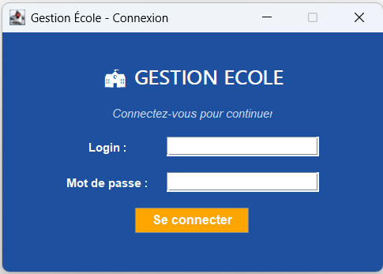
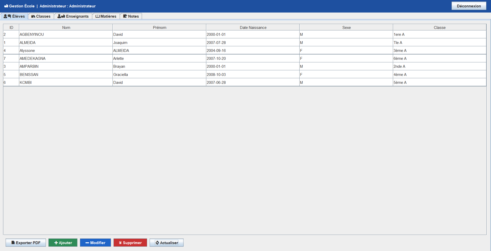
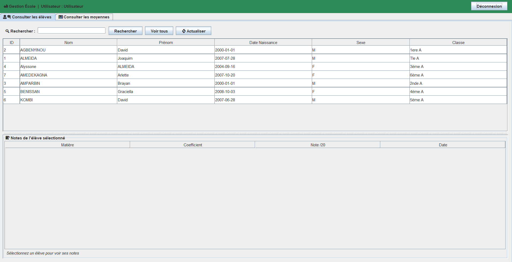

Une application de bureau pensée pour la vie quotidienne d'un établissement scolaire : élèves, classes, enseignants, matières et notes, réunis dans une seule interface, avec un accès différencié pour l'administrateur et le personnel.

L'application centralise les données scolaires et adapte ce qu'elle affiche selon la personne connectée.
Les actions essentielles à la gestion d'un établissement, accessibles depuis une interface unique.
Un écran de connexion avec identifiant et mot de passe protège l'accès aux données de l'école.
Nom, prénom, date de naissance, sexe et classe pour chaque élève, dans un tableau clair et triable.
L'administrateur ajoute, modifie ou supprime une fiche élève directement depuis la liste.
Des onglets dédiés pour organiser les classes, les enseignants et les matières enseignées.
Chaque élève peut être sélectionné pour consulter ses notes par matière, avec coefficient et date.
La liste des élèves peut être exportée en PDF pour l'archivage ou l'impression.
La même base de données, présentée différemment selon qui est derrière l'écran.
Un écran d'accueil sobre demande un identifiant et un mot de passe avant de donner accès à l'application.
L'administrateur accède à tous les onglets (Élèves, Classes, Enseignants, Matières, Notes) et peut ajouter, modifier ou supprimer des données.

Le personnel enseignant consulte la liste des élèves, effectue une recherche, puis sélectionne un élève pour afficher ses notes par matière.

L'interface s'adapte pour ne montrer que ce qui est pertinent selon la personne connectée.